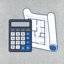

Tradies · Consultants · Suppliers · Real-estate agents
The provider side of QSME
Get found by live projects. Price the same lines as everyone else. Get paid on proof.
QSME is where NZ owners, developers and main contractors plan, price and run their builds. If you build, design, inspect, supply or sell property, there's a seat for you on the job.
Illustrative
Tradies & subcontractors
Builders, sparkies, plumbers, roofers, drainlayers, painters, tilers and every trade in between.
- A profile in Find a Tradie, searchable by trade and region, that any project can invite.
- One Opportunities feed: public tenders plus private invitations that never show in the feed.
- Bid a total or itemised, with your own dates and payment terms. GST basis is frozen with the bid.
- Win it and it moves to Awarded Work with the contract and milestones set up. Milestones are paid on proof of work.

Consultants & professionals
Architects, engineers, quantity surveyors, project managers, inspectors, surveyors.
- Be found and invited under your profession, by region.
- Run your clients' projects from one record: schedule of quantities, tenders, contracts, programme, documents.
- QS reports straight from the schedule: cost plan, progress claim, drawdown certificate, cost to complete.
- Everything goes out under your logo. Your client sees the same programme and money page you do.
Suppliers & merchants
Timber, roofing, linings, fixings, hire, and services priced by the hour, day or job.
- A listing in Find a Supplier, searchable by material and region.
- Publish a price list: products or services, one public rate per unit, filed under shared categories.
- Import the whole list from a spreadsheet.
- Your products become selectable inside estimators' schedules. That's where the quantity lives.
- Buyers open your shop page and get in touch. You quote and supply the way you do now.
Real-estate agents
Sections, development sites, investment stock, homes.
- Switch on real-estate agent mode and list for sale, for lease or investment.
- Every listing is tied to its real address, so a buyer opens the zoning and site data a click away.
- "Development potential" with something behind it: for Auckland sites, the zone, what could go here and a rough feasibility sit next to your listing.
Sign up and choose "I provide services".
hello@qsme.co.nz · +64 9 920 8896 · qsme.co.nz
Sign up at qsme.co.nz